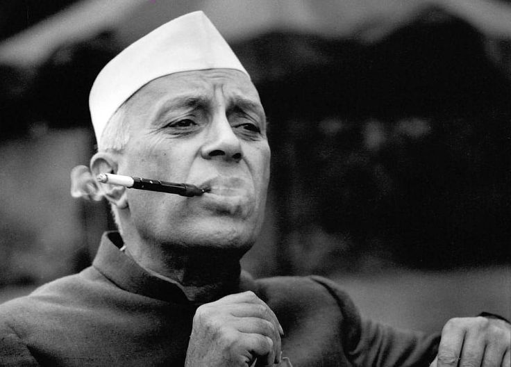

DON'T BECOME NEHRU!

Without association understanding of Tattva is nothing. Read Srila Prabhupada's books, associate with him you understand everything.
Don't become Nehru, just like Nehru did, with the temples, Vedas, Scriptures , culture, he glorified them so much everywhere...in books, etc. He preserved the culture, but only Preserved! Like a nice decorated show peice and actually digged a grave for the knowledge!
Preserving becomes death if it loses its place in the society.
Don't dig grave of Srila Prabhupada's books!
Only saying Jaya Prabhupada. No! There is a visible decline in reading Srila Prabhupada's books and hearing lectures. Our only focus should be reading and listening to Srīla Prabhupāda, does not matter who brought us in ISKCON who ever's lecture, book etc. But now that I have entered ISKCON, I DON'T KNOW ANYONE EXCEPT Srīla Prabhupāda!
Sadhu Glorification is always there. But after this sadhu Glorification no reading, no hearing no chanting. Sadhu, in Goloka Vrindāvan might be thinking, who is this poisonous snake who's glorifying and hearing my Glorification but not following! Only filling bellies daily and especially on Srīla Prabhupāda's Vyasa pooja, Where is your Reading Of Srīla Prabhupāda's Books!?
~Admin